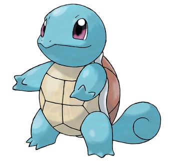
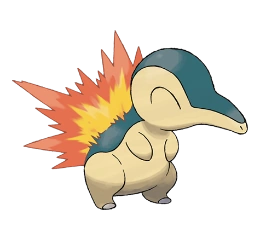
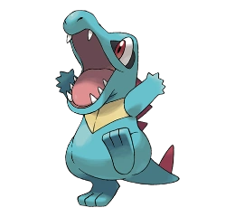
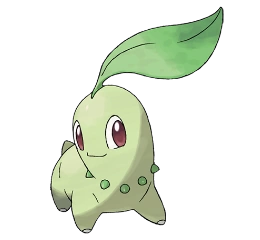

Los iniciales originales casi no necesitan presentación. Charmander, Squirtle y Bulbasaur son archiconocidos y
han estado presentes en prácticamente todos los juegos de la saga.
Bulbasaur
Bulbasaur es un Pokémon cuadrúpedo de color verde y manchas más oscuras de formas geométricas. Su cabeza
representa cerca de un tercio de su cuerpo. En su frente se ubican tres manchas que pueden cambiar
dependiendo del ejemplar. Tiene orejas pequeñas y puntiagudas. Sus ojos son grandes y de color rojo.
Las patas son cortas con tres garras cada una. Este Pokémon tiene plantado un bulbo en el lomo desde que
nace. Esta semilla crece y se desarrolla a lo largo del ciclo de vida de Bulbasaur a medida que suceden
sus evoluciones. El bulbo absorbe y almacena la energía solar que Bulbasaur necesita para crecer. Dicen
que cuanta más luz consuma la semilla, más olor producirá cuando se abra. Por otro lado, gracias a los
nutrientes que el bulbo almacena, puede pasar varios días sin comer. El bulbo de Bulbasaur le ayuda a
defenderse de los enemigos y desde él puede disparar ataques tales como rayo solar y drenadoras entre
otros. No es muy raro encontrarlo en jardines y zonas cercanas a fuentes de agua. También suele
encontrarse en zonas boscosas profundas. Se los puede atraer con el aroma de las flores. Bulbasaur es
omnívoro, aunque si no encuentra comida, su bulbo absorbe la energía del sol para hacer la fotosíntesis
y le permite pasar días sin comer. Dicen que en las mañanas su bulbo se abre y atrapa al primer
Pokémon que caiga por su irresistible olor.
Charmander
Charmander es un pequeño lagarto bípedo. Sus características de fuego son resaltadas por su color de piel
anaranjado
y su cola con la punta envuelta en llamas. Charmander, como sus evoluciones Charmeleon y Charizard, tiene
una pequeña
llama en la punta de su cola. La intensidad con la que esta arde es un indicador del estado físico y
emocional de este Pokémon.
Cuando la intensidad de la llama está baja, su salud puede estar en riesgo. Cuando arde con normalidad,
Charmander está saludable
y alegre. Cuando la llama de su cola arde con más intensidad, es porque está enfadado, y si la llama de su
cola se vuelve azul es
porque encontró un rival fuerte y digno de él. Si la llama desaparece o se apaga, moriría. Charmander no
muere necesariamente si cae
al agua, pero permanecer en ella por más de unos minutos puede ser fatal. En la lluvia no le pasan grandes
cambios ni se debilita,
pero las gotas de agua que caen en él provocan vapor y poco a poco van apagando su llama. Los ejemplares de
Charmander son escasos
en el hábitat salvaje. Los pocos que quedan eligen preferentemente lugares cálidos para vivir, como las
cercanías de volcanes.
El hábitat de Charmander es la montaña. Vive en lugares rocosos y aledaños a lugares muy calurosos, pero
cabe destacar que no vive
en zonas de gran altura. También viven en montañas escarpadas, en manadas junto con Charmeleon y Charizard.
Su dieta es la dieta
omnívora habitual de un Pokémon. Suelen cazar y recolectar en pequeños grupos, y llama a los demás si
encuentran cualquier tipo de
alimento.
Squirtle

Squirtle es una de las especies más difíciles de encontrar. Habita tanto aguas dulces como marinas,
preferiblemente zonas bastante profundas.
Son pequeñas tortugas color celeste con caparazones color café; o rojas en algunos casos, con una cola
enrollada que los distingue.
Poco después de nacer, sus caparazones se endurecen y se hacen más resistentes a los ataques; muchos objetos
rebotarán en ella.
La forma redonda de su caparazón y las figuras en su superficie hacen que Squirtle tenga una muy buena forma
hidrodinámica, lo que le da mayor
velocidad al nadar. Cuando se siente atacado, Squirtle esconde completamente su cuerpo en el interior de su
caparazón, lo que hace que resulte
imposible atacarle, además cuando esta dentro de su caparazón puede atacar escupiendo agua por todos los
agujeros del caparazón. Es capaz de
escupir agua por su boca con gran fuerza, ya sea para atacar o intimidar. Squirtle es relativamente fácil de
criar gracias a su destacado carácter
alegre y simpático, aunque su relativa lentitud en tierra firme y la dificultad para equilibrar sus ataques
acuáticos con ataques de otros
tipos pueden crear algunos problemas al entrenador. Squirtle normalmente come algas, pero también le gustan
otros alimentos como la fruta.
En tierra firme, a Squirtle le puede resultar un poco más difícil andar, pero le resulta mas fácil ir a
cuatro patas.1 El hábitat de
Squirtle es el agua dulce: este Pokémon habita en lugares como estanques, ríos y lagos. También puede vivir
en mares. Se encuentran en
islas junto con sus evoluciones.
Segunda generación
Cyndaquil

Cyndaquil es un Pokémon tímido y pequeño; que recuerda a un equidna. Su piel es azulada en la parte superior
de su cuerpo, pero un color crema en la parte inferior.
Una de sus características más notorias es que puede encender su llama a voluntad, a diferencia de otros
Pokémon de tipo fuego con llamas en su cuerpo como Charmander
(con sus respectivas evoluciones) y Magmar. Las llamas de este Pokémon salen de cuatro pequeños orificios en
su espalda, que se encienden cuando está a punto de pelear.
Al igual que muchos Pokémon de tipo fuego, el tamaño de su llama depende del estado en que este se
encuentre: si está contento, eufórico o furioso, su llama será más grande,
y si está enfermo o deprimido, el tamaño del fuego sobre su lomo se verá muy reducido. Cyndaquil utiliza el
fuego de su lomo para defenderse en caso de que algún depredador
se abalance sobre él. Cuando está enfadado, las llamas de su lomo salen con fuerza, pero si está cansado
solo consigue echar chispas.
Una característica graciosa de este Pokémon es que siempre tiene los ojos cerrados. Aún así. puede ver por
donde camina, al igual que Skitty, Swinub, Abra o Uxie, entre otros.
Suele esconderse en cuevas o entre la vegetación. Normalmente se esconde de otros Pokémon o humanos, debido
a su naturaleza tímida. A menudo se queda acurrucado o enroscado en forma de una pequeña bola.
Totodile

La apariencia de Totodile está basada en un Reptil acuático como la cria de un cocodrilo o un lagarto. Tiene
un pequeño cuerpo de color azul con una banda amarilla que cruza su pecho. En su espalda y su cola tiene
cuatro
puntas rojas. Totodile tiene una gran y prominente quijada, llena de muchos dientes agudos, con la que puede
incluso romper rocas pequeñas.
Totodile es un Pokémon extremadamente arriesgado y un poco alocado. Pero a pesar de ser tan agitado y muy
curioso, este
Pokémon es muy fuerte, y llega a hacer ataques de gran daño, aun asi puede llegar a ser muy cariñoso.
A este Pokémon le encanta morder todo tipo de cosas, por lo que no tiene problemas a la hora de conseguir
comida. Si se
encuentra en el agua o cerca de ella, bucea en busca de comida. Le gustan las bayas de sabor seco y las
dulces. Necesita comer mucho al día ya que gasta mucha energía debido a lo alocado que resulta ser este
Pokémon.
Totodile vive cerca del agua. Son reptiles que prefieren los climas tropicales y se encuentran típicamente
en torno a
los grandes ríos, las costas del océano, en grandes lagos y/o pantanos.
Chikorita

Este dócil Pokémon hoja, de color verde claro, se alimenta con rayos solares mediante la fotosíntesis que
ocurre cuando éstos impactan en su cuerpo o en su hoja. Esta hoja tiene propósitos múltiples: sirve tanto
para detectar la temperatura en la atmósfera y la humedad, lo que le ayuda a encontrar lugares cálidos;
como de adorno que resalta el hecho de que pertenece al tipo planta. Por otro lado, puede emanar un suave
y agradable aroma que procede de su hoja que calma a quienes tenga alrededor. Esto puede ser usado como
una ventaja en batalla.
Parece estar basado en una cría de dinosaurio o una lagartija. Además, posee una especie de collar alrededor
de su cuello, compuesto de pequeñas semillas. Estas empiezan a crecer mientras evolucionan, pasando a
semillas
a punto de germinar hasta convertirse en pétalos, similar a lo que le pasa a Bulbasaur al evolucionar.
Sus ojos son de color rojo y al evolucionar a Meganium, se vuelven amarillos.
Pese a su carácter normalmente algo asustadizo y tímido; si se les reta a un combate es muy probable que lo
acepten, y si la oportunidad lo amerita, darán muestras de valentía. Aunque este tipo de valentía solo lo
demuestran Chikorita de una montaña específica. Chikorita coge cariño fácilmente a su entrenador, y a veces
puede ser un poco celoso.